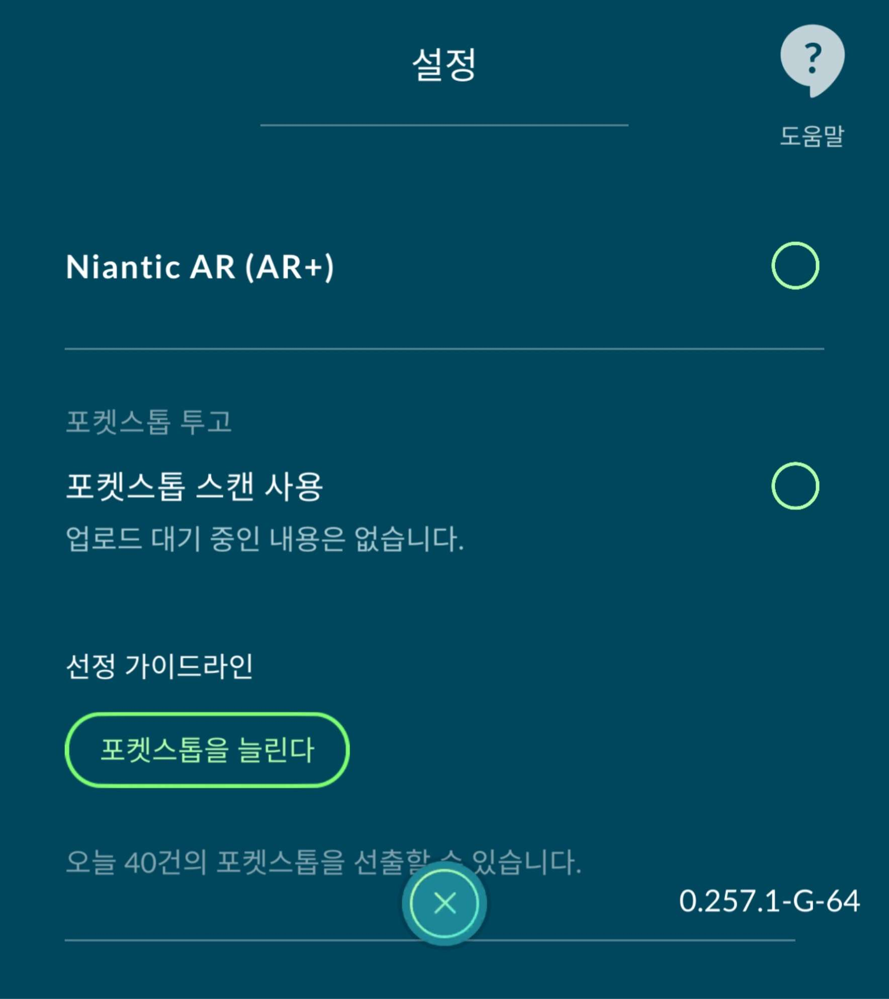
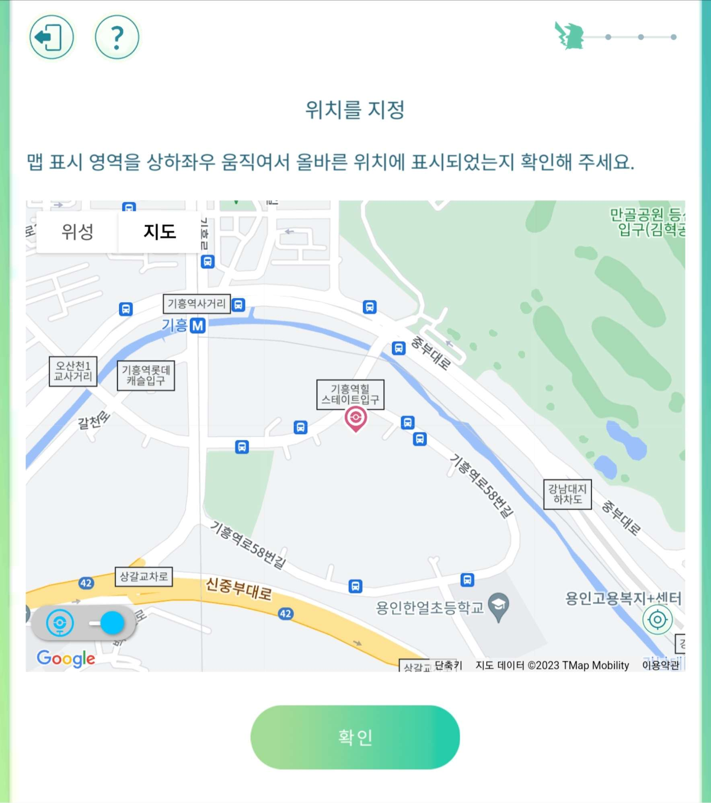

스탑을 신청하기 위한 후보를 정합니다.(후보 기준을 충족해야 합니다. 5장 참고)
셀을 꼭 확인해줍니다.
스트리트 뷰를 업로드 해줍니다.(선택)
포켓몬고 게임 내 설정에서 "포켓스탑을 늘린다"를 탭 합니다.

위치 지정을 해줍니다.(위성 사진, 지도 옵션이 있으니 선택해줍니다)
필자는 셀과 비교하면서 후보를 신청하기에 지도를 주로 이용합니다.

다음으로는 "후보 사진"과 "주변 사진"을 촬영해줍니다.
사진에는 사람, 차량 번호판, 신체 부위, 개인 정보가 보이지 않도록 촬영합니다.
(5장에서 더 자세히 다룰 예정)
다음 단계에서는 포켓스탑 후보의 이름, 설명을 기입합니다.
후보의 이름과 설명은 객관적으로 입력해주세요.
ex): 00아파트 놀이터, 주민들이 이용하는 시설입니다.
추가 설명란에도 자신이 원하는 것을 입력할 수 있습니다.
필자의 경우는 자신이 촬영한 스트리트 뷰가 있다는 것을 언급해줍니다.
글로만 봐서는 어려울 것 같지만 직접 신청해보신다면
포켓몬고 내에서 설명이 잘되어 있기 때문에 신청하는 과정은 어렵지 않을 것 입니다.
이해를 돕기 위해 유튜브 영상을 공유해드립니다.
스탑 신청,스트리트 뷰 쌈밥 유튜브